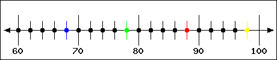
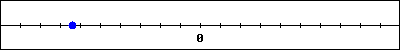
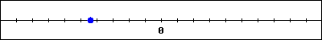
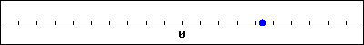
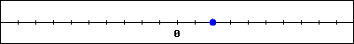
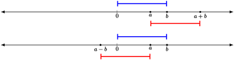
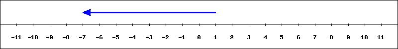

Section1.1Addition, Subtraction, and Multiplication
Section Objectives
Visualize real numbers as positions on the line with zero and one as basic objects.
Understand and visualize addition, subtraction, and multiplication as geometric actions.
Introduce the notion of an inverse operation as the undoing of a given operation.
Subsection1.1.1Operations on Numbers as Actions
Algebra is ultimately about applying some procedure, or sequence of procedures, to numbers, and asking which numbers yield some desired result. To this end, we need to conceptualize numbers more dynamically than just as a way of counting objects. In the following table we present a way to conceptualize numbers as positions on a line, and the basic operations as movements.
Table1.1.1.Addition, Subtraction, and Multiplication as Motions on the Line
Positions and Sizes
Numbers
Location on a Line
\(\longrightarrow\)
Number
Center of the Line
\(\longrightarrow\)
\(0\)
Basic Unit to the Right of Center
\(\longrightarrow\)
1
Position to the Right of Center
\(\longrightarrow\)
Positive Number
Position to the Left of Center
\(\longrightarrow\)
Negative Number
Given a position \(a\text{,}\) the position that is the same distance from the center but on the opposite side of the center
\(\longrightarrow\)
\(-a\)
Starting from \(a\text{,}\) and moving the same distance and direction that \(b\) is from the center
\(\longrightarrow\)
\(a+b\)
Starting from \(a\text{,}\) and moving the same distance but opposite direction that \(b\) is from the center
\(\longrightarrow\)
\(a-b\)
When \(a\) and \(b\) are positive, the number whose size relative to \(b\) is the same as the size of \(a\) relative to \(1\)
\(\longrightarrow\)
\(ab\)
\(a\) is to the right of \(b\)
\(\longrightarrow\)
\(b\lt a\)
\(a\) is to the left of \(b\)
\(\longrightarrow\)
\(a\lt b\)
In order to understand what’s going on here, it will be useful to draw pictures. This is a picture of the real number line that you’ve probably seen before:
Figure1.1.2.The basic number line.
This picture does not show us much, so let’s show one with some generic numbers \(a\) and \(b\text{,}\) where both \(a\) and \(b\) are positive with \(b>a\text{.}\)
Figure1.1.3.A number line with two positive numbers labeled.
Checkpoint1.1.4.

The point that represents 10 more than 78 is colored
red
blue
green
yellow
Checkpoint1.1.5.
Choose the graph showing \(4.4\) on the number line. If no scale is given assume tick marks are one unit apart.
A.

B.

C.

D.

A
B
C
D
Subsection1.1.2Addition and Subtraction
To represent \(a+b\) and \(a-b\) geometrically, we first measure out the distance \(b\) is to the right of zero, then move that far to the right of \(a\) for \(a+b\) and move that distance to the left of \(a\) for \(a-b\text{.}\)

Figure1.1.6.Addition and subtraction of positive numbers.
In Figure 1.1.6, since \(b>a\) we end up to the left of zero when we subtract \(b\) from \(a\text{.}\) This should make sense; if you take away more than you started out with, you end up with a shortage.
Checkpoint1.1.7.
The following represents an equation that uses integers. Create an appropriate equation that represents the blue arrow.

\(+\)\(=\)
Question1.1.8.
With \(a\) and \(b\) in the same positions as in Figure 1.1.6, draw \(b+a\text{.}\) What do you notice about \(a+b\) in relation to \(b+a\text{?}\)
Now draw \(b-a\text{.}\) Is the same relationship true for \(a-b\) and \(b-a\text{?}\)
Question1.1.9.
Draw a number line with numbers \(a\) and \(b\) on it, but this time make \(a\) positive and \(b\) negative. Is \(a+b\) to the right or left of \(a\text{?}\) Explain.
Question1.1.10.
Explain why \(0+a = a\) for any number \(a\text{.}\)
One of the important ideas in algebra is that of inverse operations. That is, two operations/actions that, when performed in succession on a number or variable, result in the original number or variable being unchanged. We can see this idea by looking at subtraction. Observe that if \(a\) and \(b\) are numbers, then \(a+b-b = a\text{.}\) This may seem obvious, especially if you draw it on the number line. However, the concept is very important; the inverse of adding \(b\) to \(a\) is subtracting \(b\text{.}\) We may say that subtracting “undoes” addition or that when you add and subtract the same quantity they “cancel each other”.
Subsection1.1.3Multiplication as Motion and Repeated Addition
Multiplication of real numbers is more difficult to visualize geometrically than addition or subtraction. The fundamental idea is that of stretching, with \(1\) being a basic unit of measurement. Let’s start with \(b\) being any positive number and \(a=1.5\text{.}\) We see that \(1\) fits into \(a\) exactly \(1.5\) times. Since \(ab\) must have the same size relative to \(b\) as \(a\) does to \(1\text{,}\)\(b\) must fit into \(ab\) exactly \(1.5\) times. Think of this as stretching \(b\) by a factor of \(a\) when \(a>1\text{.}\)
Figure1.1.11.The same number of copies of \(b\) are in \(ab\) as copies of \(1\) are in \(a\text{.}\)
One good way to think of multiplying by numbers less than one is by thinking of percents less than \(100\%\text{.}\)
Checkpoint1.1.12.
Change the following percentages into decimals:
\(\displaystyle{ 5\% = }\)
\(\displaystyle{ 50\% = }\)
\(\displaystyle{ 100\% = }\)
\(\displaystyle{ 500\% = }\)
If \(a\) is smaller than \(1\text{,}\) for example \(a = 0.75\text{,}\) then you don’t get a whole copy of \(1\) in \(a\text{,}\) you only have \(75\%\) of one. This means you will only get \(75\%\) of a copy of \(b\) in \(ab\text{.}\) In the case when \(a<1\text{,}\) we think of \(ab\) as a squeeze of \(b\) by a factor of \(a\text{.}\)
An important case happens when one of the two numbers is a whole number (an integer). If \(n\) is a positive integer, then \(1\) fits into \(n\) exactly \(n\) times. Hence, if \(b\) is positive, \(b\) will fit into \(nb\) exactly \(n\) times. Let’s view this on the number line with \(n=5\text{:}\)Figure1.1.13.Multiplication of \(b\) by \(5\text{.}\) Compare with adding \(b\) to itself \(5\) times.
The key observation here is that when you add \(b\) to itself \(n\) times you get the same result as when you multiply \(b\) by \(n\text{.}\) In other words, multiplication by a positive integer represents repeated addition. This is where the terminology “\(n\) times \(b\)” comes from; we’re taking \(b\) and adding it to itself \(n\) times.
Note that this gives us two different ways of thinking of multiplication; it represents repeated addition when the multiplier is positive and whole, but represents stretching or compression in other cases. We use the mental representation that makes the most sense for a given problem. This may seem confusing at first, but being aware of having several representations of mathematical objects, and knowing when you use them, is a key skill in truly understanding mathematics.
Question1.1.14.
Explain why \(0\cdot a = 0\) and \(1a=a\) for any number \(a\text{.}\)
Question1.1.15.
If \(a\) is a number between \(3\) and \(4\text{,}\) what is the possible range of values for
\(a+12\text{?}\)
\(12a\text{?}\)
\(12a+4\ \text{?}\) Note: Only \(a\) is multiplied by \(12\text{,}\) the \(4\) is not multiplied by \(12\text{.}\)
Question1.1.16.
Explain why \(ab\) is equal to \(ba\) when \(a\) and \(b\) are both positive integers.
This question is pretty difficult. Giving a really good answer should start by thinking of \(ab\) as the number of objects when you take \(a\) piles of size \(b\text{,}\) since that is one way of visualizing \(b\) added to itself \(a\) times. Then describe how you could systematically rearrange those objects into \(b\) piles of size \(a\text{.}\)
Lastly, let’s think about multiplying with negative numbers. Recall from Table 1.1.1 that if \(a\) is a number, then \(-a\) is the same distance from \(0\text{,}\) but on the other side of \(0\) from \(a\text{.}\) Multiplying negative numbers extends this idea. When \(b\) is any number and \(a\) is a negative number, then \(ab\) is the number with the same squeeze or stretch factor applied to \(b\) as if \(a\) were positive, but flipped to the other side of zero. For instance if \(b\) is positive, then \(-0.75b\) is the number \(75\%\) as far from \(0\) as \(b\text{,}\) flipped to the other side of \(0\) from \(b\text{.}\)Figure1.1.17.Multiplying by a negative is multiplying by a positive, then flipping across zero.
Question1.1.18.
Explain why the following statements are true using pictures and words to represent the numbers involved:
A positive number times a positive number is positive.
A positive number times a negative number is negative.
A negative number times a negative number is positive.
If \(a\) is any number, multiplying \(a\) by \(-1\) results in \(-a\text{.}\)